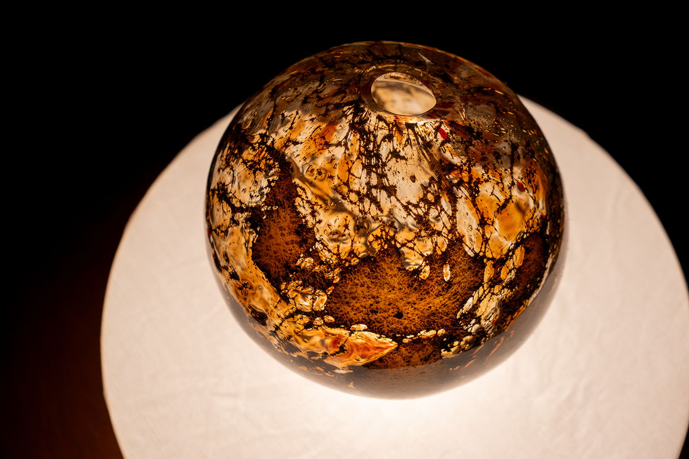
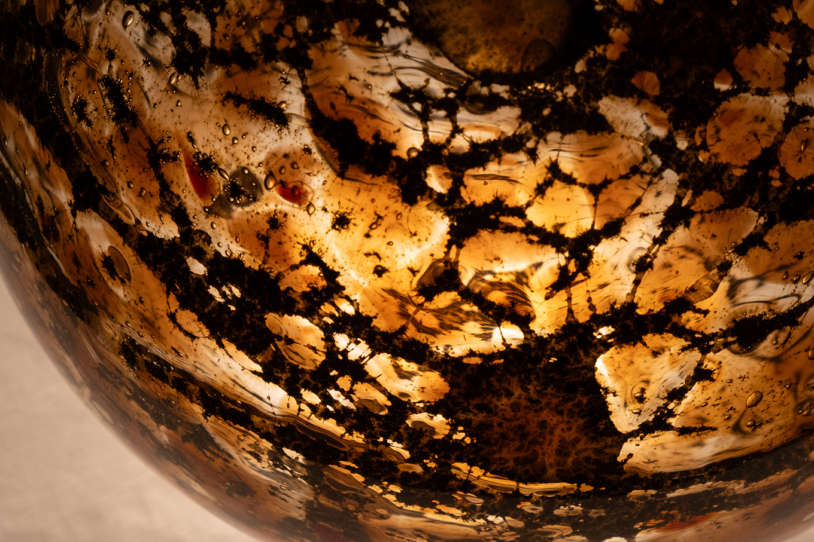
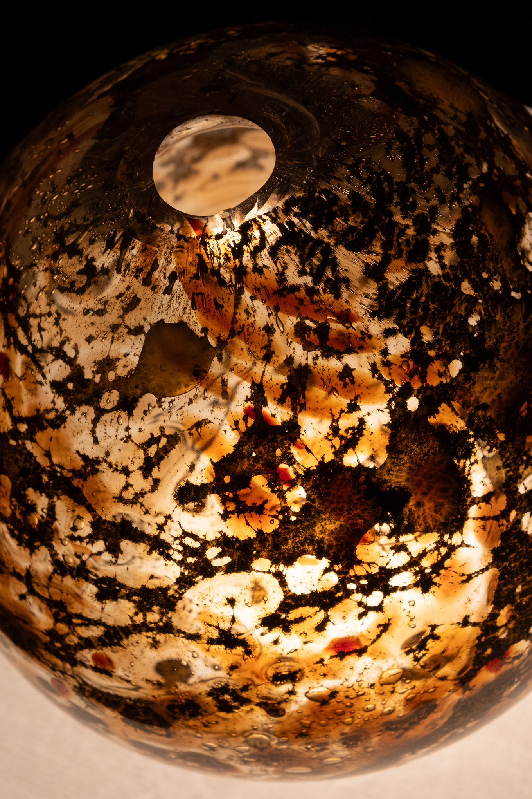
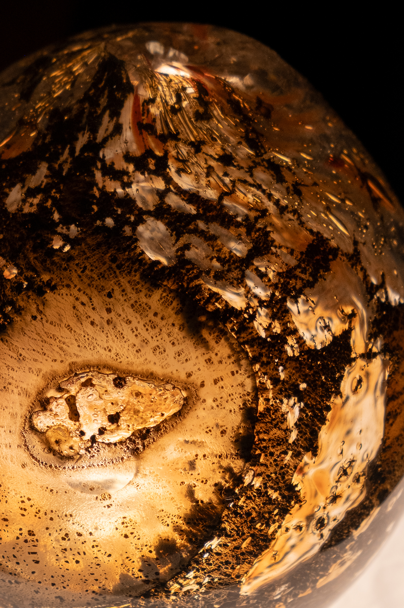
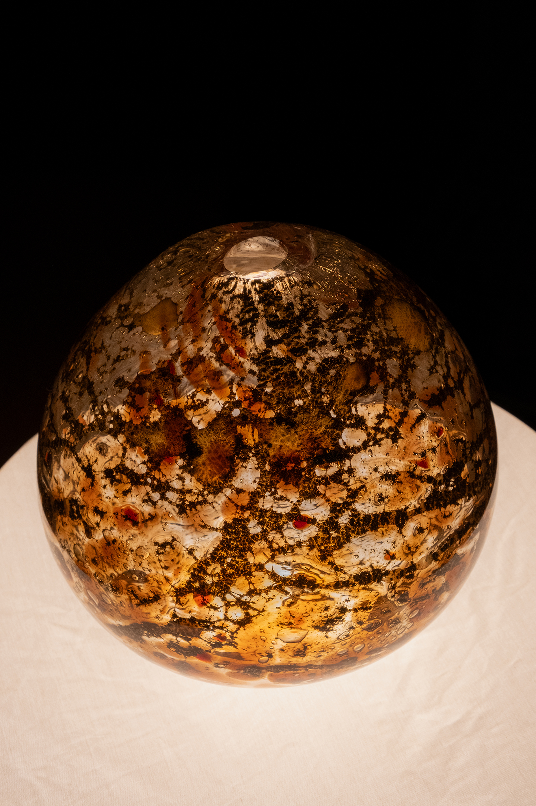

Calderas (Boiling Pots) (2022)

The word 'caldera' originates from the Latin 'calderia', meaning ‘boiling pot’, and is used to describe the large, spherical craters which form when the mouth of a volcano collapses. The Calderas are a series of process-informed vessels which seek to encapsulate the tension of their own making – the drama of the hot shop is likened to the elemental chaos of a volcano, where rock and silica meet in a molten core to erupt upwards in a dangerous display of rapid cooling in which liquid returns to solid form.
The work takes Io (eye-oh), one of Jupiter's moons and the most volcanically active body in our Solar System, as it's muse. Molten glass collects sheets of aluminium, reacting with the metal to create unpredictable textures and colours. The tension between glass and metal is encased within the work; the history of the blazing heat of the furnace, the touch of the block, the air from the blower's lungs, all preserved in the orb forms, simultaneously moon-like, otherworldly, and domestic ornaments.



